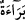
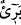

buyurmuştur.[91]
Yine rivâyet edilmiştir ki Hz. Ali (k.v.) kurban bayramının birinci günü beyaz bir
katırın üzerinde Cebâne bölgesine doğru giderken bir adam gelip katırının dizginlerini
tuttu ve hacc-ı ekber gününün hangi gün olduğunu sordu. O da: “İşte o gün bugündür.
Hayvanı bırak, ona yol ver!” dedi.
2- “Hacc-ı ekber günü”nden maksad vakfeye durulan arafe günüdür. Çünkü Hz.
Peygamber (s.a.) in “Hac arafedir.”[92] buyurmuştur. Peygamber Efendimiz (a.s.) hacda
yapılacak fiilleri Arafat’ta vakfeye durmaya hasretmiştir. Çünkü haccın en büyük rüknü
vakfedir Vakfeye yetişen haccı idrak etmiş, yetişemeyen ise haccı kaçırmış olur. Hacca
‘ekber’, yâni ‘en büyük’ vasfı verilmiştir. Çünkü umreye “hacc-ı asğar” yâni “küçük
hac” adı verilir. Bir başka sebebi de müslümanların ve müşriklerin o günde bir araya
gelmeleri ve o günün (vakfenin) ehl-i kitabın bayramlarına tesadüf etmesidir ki ne
ondan önce, ne de sonra bir daha denk gelmemiştir. İşte bu yüzden o gün bütün grupların
ve din mensuplarının kalblerinde kıymetlenip önemi artmıştı.
Bir rivâyette: “Vakfe cuma gününe rastlarsa yetmiş hac sevabına muâdil olur.”[93]
diye vârid olmuştur ki işte hacc-ı ekber odur.
Burada “uzaktır” anlamındaki “berîün” kelimesinin zikredilmesi bir tekrar sayılmaz.
Zira sûrenin başındaki “” kelimesi bir “haber verme” mâhiyeti arzederken burada
zikredilen “” kelimesi bu ültimatomun bildirilmesini gerekli kılan bir ihbardır. Bu
sebeple “insanlar”la irtibatlandırılmış, daha önce “kendileriyle andlaşma yapmış
olduğunuz” buyurulduğu gibi kendileriyle andlaşma yapılanlara tahsis edilmemiştir.
“Eğer” küfürden ve ahdinizi bozmaktan “tevbe ederseniz bu” tevbe “sizin için” iki
dünyada küfür üzere ve ahdi bozmuş olarak kalmaktan “daha hayırlıdır. Ve eğer yüz
çevirirseniz” tevbe etmekten kaçınırsanız “bilin ki siz Allah’ı âciz bırakacak
değilsiniz.” dünyada istediği zaman O’nun elinden kurtulamazsınız, kaçarak O’nu âciz
bırakamazsınız. Siz Allah’ı âciz bırakamazsınız, yani ondan kaçamaz veya onunla
mücâdele edemezsiniz.
“O kâfirlere” âhirette “elem verici bir azâbı müjdele!” Burada hitap Rasûlullah
(s.a.)’edir. Burada “müjde”, onlarla alay etmek için korkutma makamında zikredilmiştir.
Ebû Hüreyre (r.a.)’dan rivâyet edildiğine göre şöyle demiştir: “Rasûlullah (s.a.), Hz.
Ali’yi “Beraet/ihtar” ile Mekke’ye gönderdiğinde ben de onun yanındaydım.” Ebû
Hüreyre’ye: “Orada ne diyerek ilanda bulundunuz?” diye sorulunca şöyle cevap verdi:
“Şöyle çağırıyorduk: “Cennete ancak mümin olanlar girecek. Bu yıldan sonra hiçbir
müşrik ve çıplak kimse bu Beyt’i ziyaret edip tavaf edemeyecek. Rasûlullah ile anlaşma
yapan kimselerin ahidlerinin süresi dört ayla sınırlandırılmıştır. Süre bitince Allah da
Rasûlü de müşriklerin ahidlerinden berîdir, uzaktır.”